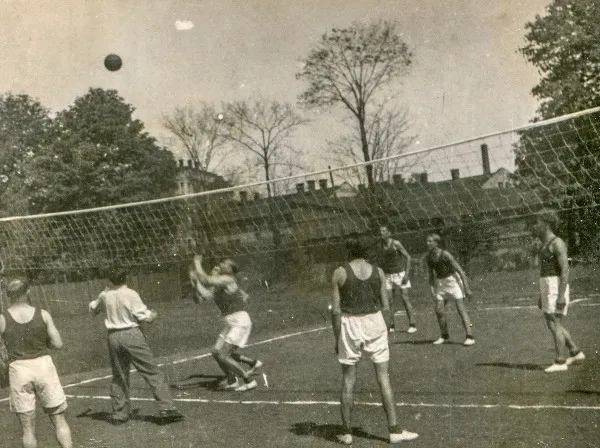
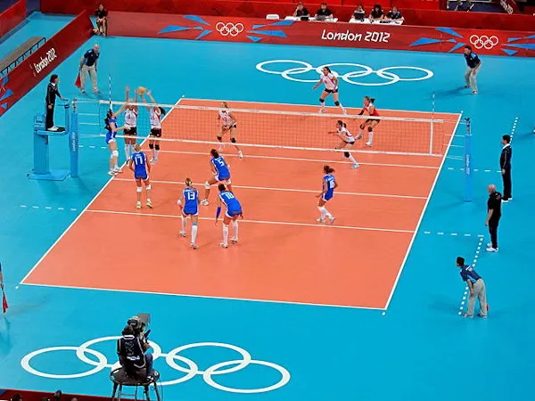

Volêi
Um dos esportes mais amados e assistidos dos últimos tempos!
O vôlei ou voleibol é um esporte coletivo praticado em uma quadra dividida por uma rede. Duas equipes disputam a partida com o objetivo de tocar a bola no campo adversário, a qual deve ser arremessada por cima da rede.
Origem
O vôlei surgiu em 1895 nos Estados Unidos. O esporte foi criado por William George Morgan, diretor de Educação Física da Associação Cristã de Moços (ACM) da cidade de Holyoke, no estado de Massachusetts. A modalidade foi criada na intenção de realizar um esporte durante o inverno em local fechado. Na época, praticava-se muito a calistenia (exercícios com o peso do corpo) e o recém-criado basquete. Entretanto, essas modalidades não agradavam a algumas pessoas. É interessante mencionar que o basquete também foi criado em uma ACM, poucos anos antes do vôlei, em 1891. Com isso, o pastor Lawrence Rinder desafiou William Morgan a desenvolver um esporte que reunisse aspectos recreativos, menos desgastantes e agressivos. Assim, nasceu o minonette ou mintonette. A prática era composta por regras diferentes das do voleibol de hoje em dia. Pelo fato de ser um jogo de quadra, a divisão por uma rede e o objetivo da partida são noções que tanto a versão pioneira quanto a mais atual da modalidade compartilham. A inclusão do vôlei nas escolas estadunidenses aconteceu no ano de 1915, dentro dos programas de aulas de Educação Física. Um ano depois, a ACM influenciou na publicação de regras em artigos entre estudantes universitários.
A prática do vôlei nas forças armadas americanas foi um processo que intensificou a disseminação do esporte. Após os Estados Unidos, o esporte começou a ser praticado em países como o Canadá (1900), Cuba (1905), Japão e Filipinas (1908). Na década de 1930, a prática já havia chegado a outros continentes e era realizada no âmbito do lazer. Nesse período começaram a se popularizar os campeonatos esportivos de vôlei. A Federação Internacional de Voleibol (FIBV) foi criada em 1947, na capital francesa, Paris
O primeiro Campeonato Mundial de Voleibol ocorreu em 1949 para a categoria masculina e em 1952 para a feminina. Na década de 1960 ocorreu um processo de consolidação do vôlei no mundo. Em 1964, a modalidade passou a integrar os esportes olímpicos nas Olimpíadas de Tóquio.
Volêi no Brasil
O vôlei chegou ao Brasil em 1916 e, hoje em dia, é considerado o segundo esporte mais praticado no país. Há duas narrativas sobre a primeira vez em que foi registrado uma partida de voleibol por aqui. Uma delas seria em 1915, na capital pernambucana, Recife. A outra, a versão mais disseminada, é a que ocorreu na ACM de São Paulo, no ano de 1916. No Brasil, o vôlei foi inicialmente repercutido e praticado nos espaços dos clubes, em ambientes elitizados. A prática inicialmente era mais restrita a homens de 40 a 50 anos, no âmbito da recreação. Com a criação da Confederação Brasileira de Voleibol (CBV), em 1954, houve um fortalecimento do desenvolvimento do esporte no país. A partir daí, as competições se tornaram populares. A primeira participação da Seleção Brasileira de Vôlei em um campeonato mundial ocorreu em 1956.